Candidate List 20260602 Previous Day Next Day Section 1: New Sources (age<1d) Cosmological Afterglow
Section 2: Old (1-5d) sources observed last night placeholder
Section 1: New Afterglow/FBOT Cands Last Night (1)
1. ZTF26aazfewz (Afterglow?) [Back to Top] [Share] [Trigger Swift] [Fritz ] [Lasair ]RA, Dec: 183.68706, -4.69268 12h14m44.89s, -4d-41m-33.67sGalactic (l, b): 285.98754, 56.96714 WARNING: -2.84 deg from ecliptic plane ext(g-r) = 0.055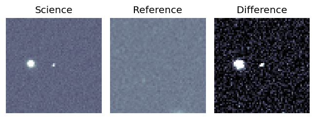
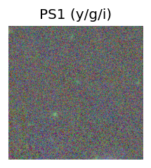
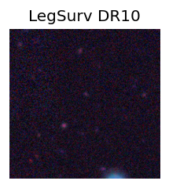
LegacySurvey: 1 sources in 3 arcsec Closest: d = 4.36 arcsec, 353.9 deg (east of north) photoz=0.51 (68% bounds 0.43, 0.59), type=REX peak abs mag = -23.98 (68% bounds -23.52, -24.37) 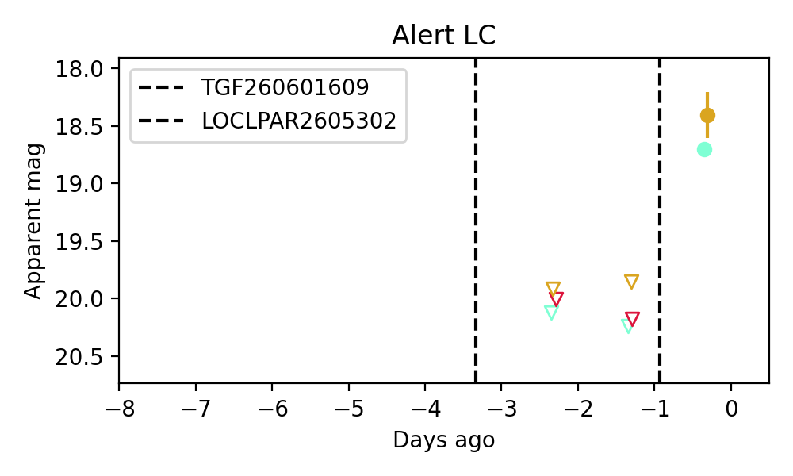
Consistent with synchrotron, g-r>0!
Section 2: Older Sources Observed Last Night (6)
0. ZTF26aayysdx (Afterglow?) [Back to Top] [Share] [Trigger Swift] [Fritz ] [Lasair ]RA, Dec: 263.3541, 37.01048 17h33m24.98s, 37d 0m37.72sGalactic (l, b): 61.75312, 30.78224 ext(g-r) = 0.041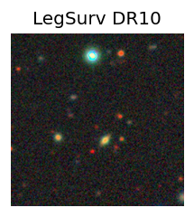
PS1: 1 source in 3 arcsec Closest: d = 8.88 arcsec photoz=0.88+/-0.25 peak abs mag = -27.50 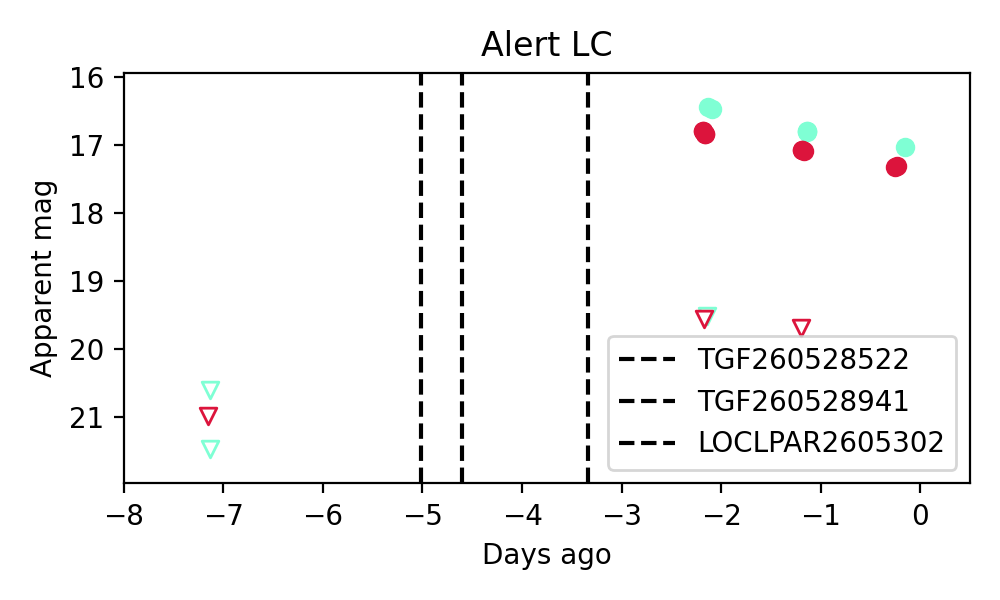
1. ZTF26aayytig (Afterglow?) [Back to Top] [Share] [Trigger Swift] [Fritz ] [Lasair ]RA, Dec: 285.37956, -10.62731 19h 1m31.09s, -10d-37m-38.33sGalactic (l, b): 24.56436, -7.03951 ext(g-r) = 0.48
2. ZTF26aayznam (FBOT?) [Back to Top] [Share] [Trigger Swift] [Fritz ] [Lasair ]RA, Dec: 16.95595, 41.99539 1h 7m49.43s, 41d59m43.41sGalactic (l, b): 126.18706, -20.77277 ext(g-r) = 0.103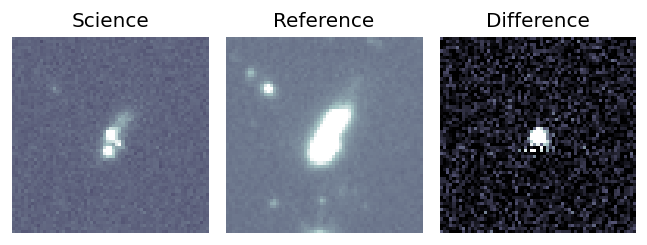
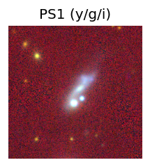
peak abs mag = -17.43 PS1: 1 source in 3 arcsec Closest: d = 2.02 arcsec photoz=0.02+/-0.00 peak abs mag = -20.67 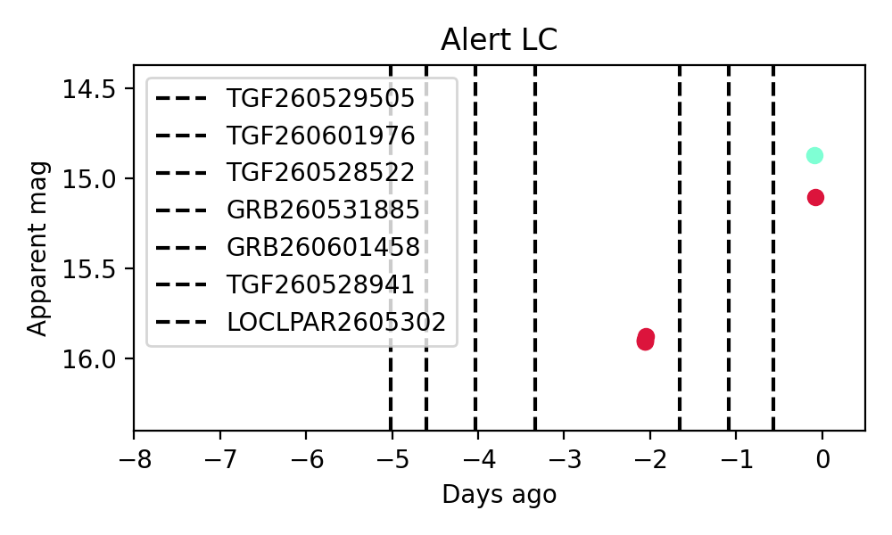
3. ZTF26aazhrll (Afterglow?) [Back to Top] [Share] [Trigger Swift] [Fritz ] [Lasair ]RA, Dec: 238.17528, 53.22717 15h52m42.07s, 53d13m37.80sGalactic (l, b): 83.68156, 47.72327 ext(g-r) = 0.013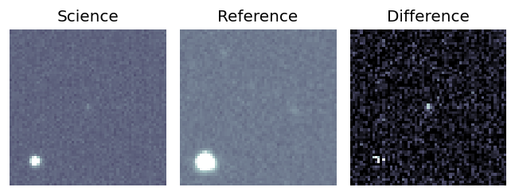
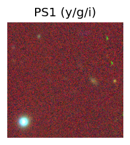
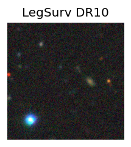
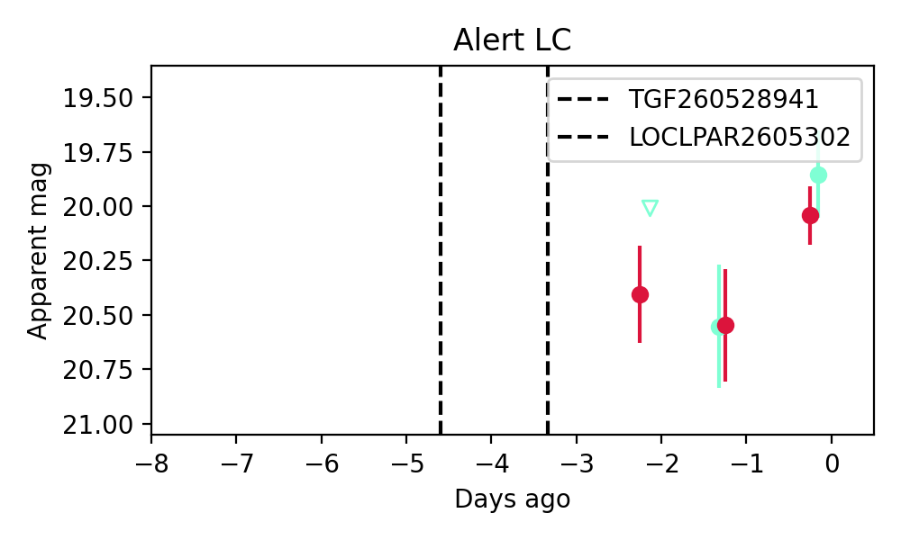
Consistent with synchrotron, g-r>0!
4. ZTF26aazhvxe (Afterglow?) [Back to Top] [Share] [Trigger Swift] [Fritz ] [Lasair ]RA, Dec: 20.82479, 39.43954 1h23m17.95s, 39d26m22.36sGalactic (l, b): 129.60928, -23.01875 ext(g-r) = 0.062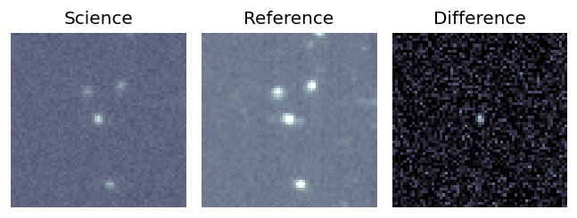
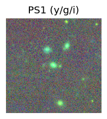
peak abs mag = -20.11 PS1: 1 source in 3 arcsec Closest: d = 0.39 arcsec photoz=0.17+/-0.02 peak abs mag = -19.79 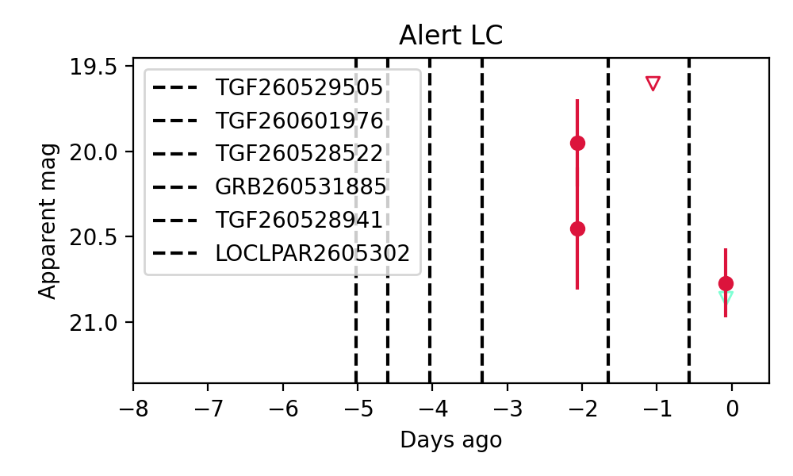
5. ZTF26aazhxpo (Afterglow?) [Back to Top] [Share] [Trigger Swift] [Fritz ] [Lasair ]RA, Dec: 17.20274, 37.70865 1h 8m48.66s, 37d42m31.14sGalactic (l, b): 126.72345, -25.03517 ext(g-r) = 0.075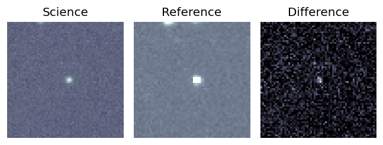
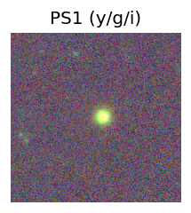
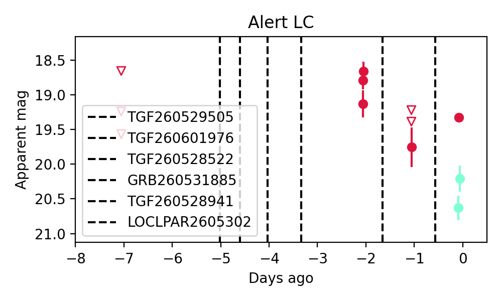
Consistent with synchrotron, g-r>0!